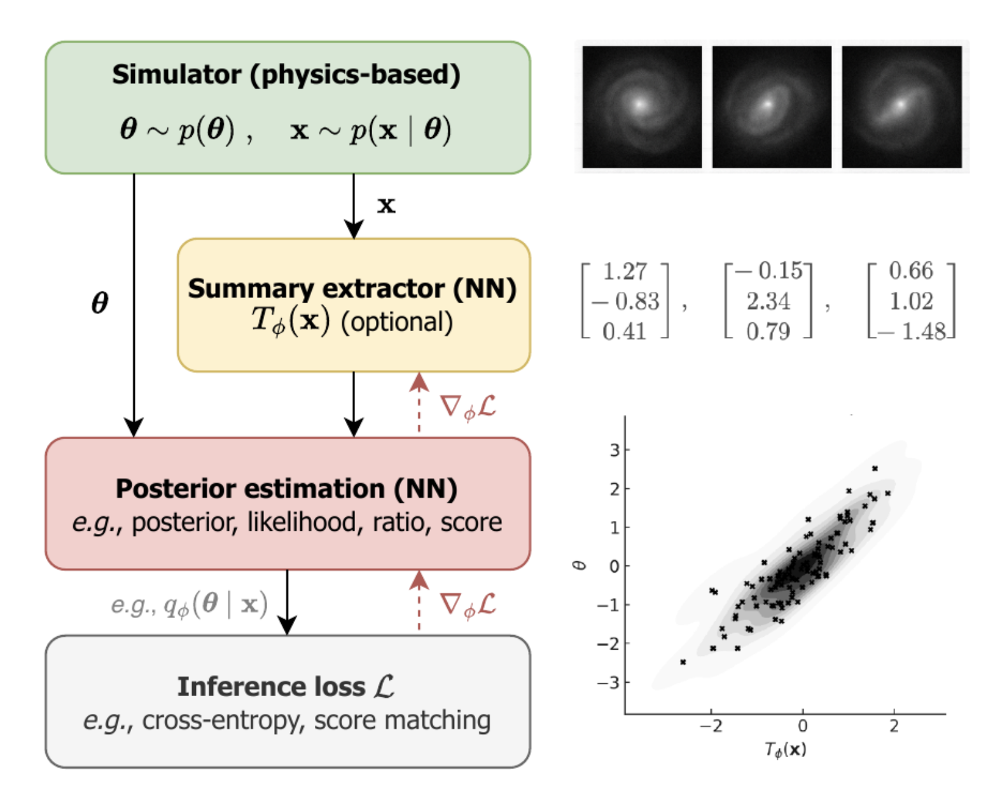
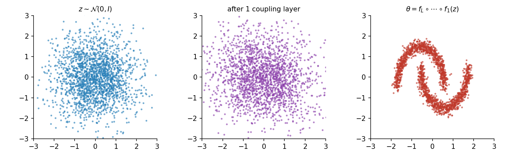
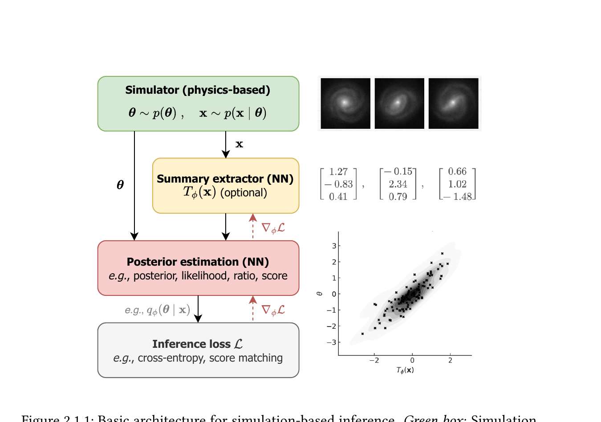

Machine Learning for Astroparticle Physics:
A Crash-course in SBI
Lecture 3 - Inference heads and parameter models
Christoph Weniger, University of Amsterdam (GRAPPA)
Today's Roadmap
Why NPE works
minimising NLL recovers the posterior
The Gaussian head
simplest head, and where it breaks
Normalising flows
change of variables, coupling layers
Continuous-time heads
flow matching, diffusion
The SBI pipeline
Three building blocks: simulator, inference loss, embedding network.
The SBI pipeline — the simulator

Maps parameters \(\boldsymbol\theta\) to data realisations \(\mathbf{x} \sim p(\mathbf{x}\mid\boldsymbol\theta)\).
Examples:
- Strong-lensing image generators (source + lens model + PSF + noise).
- Gravitational-wave waveform models (LALSuite, IMRPhenom).
- Cosmological N-body / hydro (Quijote, CAMELS).
- Particle-physics event generators (Pythia, MadGraph).
⚠ Failure mode: wrong model → wrong inference. Misspecification of the simulator propagates into the posterior, often invisibly.
The SBI pipeline — the inference loss
The choice of loss is what turns the network into a particular kind of estimator.
The loss decides what we're solving:
- NPE → NLL of \(\boldsymbol\theta^\star\) under \(q_\phi(\boldsymbol\theta\mid\mathbf{x})\).
- NRE → binary cross-entropy on a joint-vs-marginal classifier.
- NLE → NLL of \(\mathbf{x}^\star\) under \(q_\phi(\mathbf{x}\mid\boldsymbol\theta)\).
- Flow matching → velocity-regression on a probability path.
- Diffusion → denoising score matching.
Same simulator, same network, different loss ⇒ different statistical task.
The SBI pipeline — the embedding network
Maps high-dimensional observations to a low-dimensional summary that the inference head can chew on.
Why we need it:
- Strong lensing: \(\mathbf{x}\) is a \(256\times 256\) image, \(\sim\!65{,}000\) pixels.
- Gravitational waves: \(\sim\!16{,}000\) time-series samples per detector.
- Cosmology: density fields of \(\sim\!10^9\) voxels.
A raw MLP would have too many parameters and no inductive bias. A CNN (for images), Transformer (for sequences), or GNN (for catalogues) does the compression. Trained jointly with the inference head, so \(T_\phi\) learns features informative for the posterior, not for any predefined label. Architecture choices are the topic of Lec 4.
Why NPE works
Minimising NLL on simulator pairs recovers the Bayesian posterior, in two idealisations and two proofs.
NPE, NRE, NLE, one table to rule them all
| NPE | NRE | NLE | |
|---|---|---|---|
| Models | \(q_\phi(\boldsymbol\theta\mid\mathbf{x})\) | \(\log r_\phi(\boldsymbol\theta, \mathbf{x})\) | \(q_\phi(\mathbf{x}\mid\boldsymbol\theta)\) |
| Loss | NLL | cross-entropy | NLL |
| Sampling | direct, single forward pass | MCMC on \(p(\boldsymbol\theta)\,e^{f_\phi}\) | MCMC on \(q_\phi\,p(\boldsymbol\theta)\) |
| Amortised | yes | yes (re-MCMC per obs) | partial (re-MCMC per obs) |
| High-D \(\boldsymbol\theta\) | flow head needed | scales via marginal targeting (TMNRE) | hard, \(\mathbf{x}\) usually higher-D |
| Production examples | DINGO (GW PE) | saqqara (LISA SGWB) | field models / cosmology |
What does an NPE network actually learn?
In Lec 2 we trained \(q_\phi(\boldsymbol\theta\mid\mathbf{x})\) on a fixed dataset of pairs \((\boldsymbol\theta_n, \mathbf{x}_n)\) by minimising the NLL. Today the pairs come from a simulator, \(\boldsymbol\theta_n \sim p(\boldsymbol\theta)\), \(\mathbf{x}_n \sim p(\mathbf{x}\mid\boldsymbol\theta_n)\). Same loss, same network. This is neural posterior estimation (NPE).
observation
density parameters
conditional density on \(\boldsymbol\theta\)
−log \(q_\phi(\boldsymbol\theta^\star\mid\mathbf{x})\)
The NLL loss is just maximum likelihood: maximise \(\prod_i q_\phi(\boldsymbol\theta^{(i)}\mid\mathbf{x}^{(i)})\), the joint probability of all observed parameters given their data, which is the same as minimising \(-\!\sum_i \log q_\phi(\boldsymbol\theta^{(i)}\mid\mathbf{x}^{(i)})\).
Claim: at the minimum of \(\mathcal{L}\), the learned density \(q_\phi(\boldsymbol\theta\mid\mathbf{x})\) is the Bayesian posterior.
Papamakarios & Murray 2016 (mixture-density); Lueckmann et al. 2017; Greenberg et al. 2019; review: Cranmer, Brehmer, Louppe (PNAS 2020).
Training data is a distribution
The simulator pairs \(\mathcal{D} = \{(\boldsymbol\theta^{(i)}, \mathbf{x}^{(i)})\}_{i=1}^{N}\) define an empirical joint distribution:
\[ \hat p(\boldsymbol\theta, \mathbf{x}) \;=\; \frac{1}{N}\sum_{i=1}^{N}\, \delta(\boldsymbol\theta-\boldsymbol\theta^{(i)})\, \delta(\mathbf{x}-\mathbf{x}^{(i)}) \]
Which factorises into prior and simulator-likelihood:
\[ \hat p(\boldsymbol\theta, \mathbf{x}) \;=\; \hat p(\boldsymbol\theta)\,\hat p(\mathbf{x}\mid\boldsymbol\theta), \qquad \hat p(\boldsymbol\theta) = \frac{1}{N}\sum_i \delta(\boldsymbol\theta-\boldsymbol\theta^{(i)}), \qquad \hat p(\mathbf{x}\mid\boldsymbol\theta^{(i)}) \;=\; \delta(\mathbf{x}-\mathbf{x}^{(i)}) \]
In SBI the data-generating process is known by construction, it is the simulator:
(i) sample \(\boldsymbol\theta \sim p(\boldsymbol\theta)\) from the prior, (ii) run the forward model \(\mathbf{x} \sim p(\mathbf{x}\mid\boldsymbol\theta)\), (iii) store the pair.
In the \(N\to\infty\) idealisation, \(\hat p \to p(\boldsymbol\theta, \mathbf{x}) = p(\boldsymbol\theta)\,p(\mathbf{x}\mid\boldsymbol\theta)\), the delta-combs smooth into a continuous density. This limit is mathematical / conceptual; in practice we always work with finite samples.
Infinite-data limit — minimising NLL gives the posterior
Take two idealisations: (i) \(N\to\infty\), so \(\hat p \to p(\boldsymbol\theta, \mathbf{x}) = p(\boldsymbol\theta)\,p(\mathbf{x}\mid\boldsymbol\theta)\); (ii) the network is infinitely flexible, so \(q(\boldsymbol\theta\mid\mathbf{x})\) is any function with \(\int q(\boldsymbol\theta\mid\mathbf{x})\,d\boldsymbol\theta = 1\) for every \(\mathbf{x}\).
\[ \mathcal{L}[q] \;\longrightarrow\; -\!\iint p(\boldsymbol\theta, \mathbf{x})\, \log q(\boldsymbol\theta\mid\mathbf{x})\, d\boldsymbol\theta\, d\mathbf{x} \]
Functional derivative w.r.t. \(q(\boldsymbol\theta\mid\mathbf{x})\), under the constraint \(\int q(\boldsymbol\theta\mid\mathbf{x})\,d\boldsymbol\theta = 1\):
\[ \left.\frac{\delta \mathcal{L}[q]}{\delta q(\boldsymbol\theta\mid\mathbf{x})}\right|_{\int q(\boldsymbol\theta\mid\mathbf{x})\,d\boldsymbol\theta\,=\,1} \;=\; 0 \]
\[ \Longrightarrow\quad q^\star(\boldsymbol\theta\mid\mathbf{x}) \;=\; \frac{p(\boldsymbol\theta, \mathbf{x})}{\int p(\boldsymbol\theta', \mathbf{x})\,d\boldsymbol\theta'} \;=\; p(\boldsymbol\theta\mid\mathbf{x}) \]
The learned \(q_\phi(\boldsymbol\theta\mid\mathbf{x})\) is the Bayesian posterior implied by the simulator. A finite network just interpolates this idealised answer.
Infinite-data limit — two proofs
Starting from \(\mathcal{L}[q] = -\!\iint p(\boldsymbol\theta, \mathbf{x})\, \log q(\boldsymbol\theta\mid\mathbf{x})\, d\boldsymbol\theta\, d\mathbf{x}\), we want the minimiser \(q^\star\).
\[ -\frac{p(\boldsymbol\theta,\mathbf{x})}{q(\boldsymbol\theta\mid\mathbf{x})} + \lambda(\mathbf{x}) = 0 \]
\(\Rightarrow q^\star(\boldsymbol\theta\mid\mathbf{x}) \propto p(\boldsymbol\theta,\mathbf{x})\). Normalising over \(\boldsymbol\theta\) fixes \(\lambda(\mathbf{x}) = p(\mathbf{x})\) and gives
\[ q^\star(\boldsymbol\theta\mid\mathbf{x}) = p(\boldsymbol\theta\mid\mathbf{x}). \]
\[ \mathcal{L}[q] = \mathbb{E}_{\mathbf{x}}\!\big[\mathrm{KL}\!\left(p(\cdot\mid\mathbf{x})\,\|\,q(\cdot\mid\mathbf{x})\right)\big] + H(\boldsymbol\theta\mid\mathbf{x}) \]
The entropy term does not depend on \(q\). KL \(\ge 0\) with equality iff \(q = p(\cdot\mid\mathbf{x})\), so
\[ q^\star(\boldsymbol\theta\mid\mathbf{x}) = p(\boldsymbol\theta\mid\mathbf{x}). \]
Same answer, two lenses: (a) is mechanical (stationary point of a constrained functional); (b) is geometric (NLL = KL up to a \(q\)-independent constant, so minimising NLL = projecting \(p(\cdot\mid\mathbf{x})\) onto the model family under KL).
The Gaussian head
The simplest concrete inference head, multivariate \(\boldsymbol\mu_\phi(x)\) with input-dependent \(\sigma_\phi(x)\), and where it breaks.
Heteroscedastic noise — variance as a second output
Our first model baked in a single \(\sigma_\theta\). Make \(\sigma\) a function of \(x\); same network, two heads: \(\mu_\phi(x)\) and \(\log\sigma_\phi(x)\). The NLL trades off mean accuracy against calibrated width.
Toy: noise is small on the left, large on the right. The grey band is the learned \(\sigma(x)\), it tracks the true scale instead of averaging over \(x\).
The Gaussian-head network — the simplest inference head
Density family.
\( q_\phi(\boldsymbol\theta\mid x) \;=\; \mathcal{N}\!\bigl(\boldsymbol\theta\,\big|\,\boldsymbol\mu_\phi(x), \boldsymbol\Sigma_\phi(x)\bigr) \)
Both mean and covariance are NN outputs, the network learns where to be confident.
NPE loss on simulator pairs \((\boldsymbol\theta_n, x_n)\):
\( \mathcal{L}(\phi) = -\tfrac{1}{N}\sum_n \log q_\phi(\boldsymbol\theta_n\mid x_n) \)
For diagonal \(\Sigma\): \(\;\tfrac{1}{2}\bigl((\theta-\mu)/\sigma\bigr)^2 + \log\sigma\). Constant \(\Sigma\) reduces to MSE, the linear-regression case from Lec 2.
// Train q_phi(theta|x) on simulator pairs (theta_n, x_n)
for step = 1, 2, ... :
sample mini-batch B of pairs
mu, log_sigma = f_phi(x)
L = mean( 0.5*((theta-mu)/sigma)^2 + log_sigma )
phi <- Adam(phi, grad_phi L)Live demo — Gaussian-head NN on a linear forward model
Forward model: \(t_i = a + b\,x_i + \varepsilon\), 20-point grid, \(\varepsilon\sim\mathcal{N}(0,0.25^2)\). Priors \(a\sim\mathcal U[-1,1]\), \(b\sim\mathcal U[-2,2]\). Network: MLP \([20{\to}32{\to}16{\to}5]\), output \((\mu_a,\mu_b,\log\sigma_a,\log\sigma_b,\rho)\).
Left: a single observation \(\mathbf{x}\). Right: the learned posterior \(q_\phi(a,b\mid\mathbf{x})\) (orange ellipse) vs the true \((a^\star,b^\star)\) (green star). The same trained network handles any new \(\mathbf{x}\), amortised inference.
Normalising flows
A flexible density from invertible maps, via the change-of-variables formula.
Why we need flows
Needed for the NPE loss.
Needed for corner plots, downstream analyses.
Multimodal, curved, heavy-tailed.
Normalising flows satisfy all three by construction, via the change-of-variables formula.
Change of variables
Flow design: pick architectures where \(J\) is triangular, so \(|\det J| = \prod_i J_{ii}\) costs \(\mathcal{O}(d)\).
Worked example: warping a Gaussian
Base \(\mathcal{N}(0,1.5^2)\) pushed through \(\theta = z + A\sin z\). For \(A < 1\) the map is strictly monotonic, still invertible, but as \(A\to 1\) the derivative near \(z=\pm\pi\) collapses, so density mass piles up there: the warped target becomes bimodal.
Normalising flow = stack of invertible maps
- Sampling \(\boldsymbol\theta \sim q_\phi\): draw \(\mathbf{z}\), push forward through the stack.
- Density evaluation at a given \(\boldsymbol\theta\): invert the stack, evaluate \(p_Z\), correct with Jacobians.
- Composition of invertible maps is invertible, deep flows stay a valid density.
Log-density by chain of Jacobians
Key design constraint: each \(|\det \partial f_\ell / \partial \mathbf{z}_{\ell-1}|\) must be cheap.
Affine coupling layers
\(\mathbf{z}_A\) passes through untouched; \(\mathbf{z}_B\) is scaled-and-shifted given \(\mathbf{z}_A\). Trivially invertible in closed form.
\(J\) is triangular ⇒ \(\log|\det J| = \sum_i s_\phi(\mathbf{z}_A)_i\). \(\mathcal{O}(d)\), not \(\mathcal{O}(d^3)\).
Alternate which half is "active" across layers (RealNVP). Stack \(L\) of these → expressive flow.
Conditional flows, plugging in the data
Let the scale and shift networks depend on the data (or its embedding): \[ s_\phi(\mathbf{z}_A, T_\phi(\mathbf{x})), \qquad t_\phi(\mathbf{z}_A, T_\phi(\mathbf{x})) \]
- Embedding \(T_\phi(\mathbf{x})\) compresses the data (CNN / Transformer / GNN, see Lec 4).
- Conditional flow turns \(\mathbf{z}\sim\mathcal{N}(0,I)\) into \(\boldsymbol\theta\), with all coupling-layer parameters depending on \(T_\phi(\mathbf{x})\).
- Loss: \(-\log q_\phi(\boldsymbol\theta^\star\mid\mathbf{x})\) averaged over simulator pairs.
Flow pushforward, 2D worked example

Base samples \(\mathbf{z}\sim\mathcal{N}(0, I)\) are warped layer-by-layer into the target shape (here: two-moons). Each layer's Jacobian contributes to the log-density, keeping normalisation exact.
Flow pushforward, live 2D demo
Target: banana (grey).
Loss: \(-\mathbb{E}[\log q_\theta(x)]\)
loss: —
Trained live in your browser with TF.js. Each layer: \(x_b = z_b \cdot e^{s(z_a)} + t(z_a)\), swapping \(a\leftrightarrow b\). Exact log-density via \(\log|\det J| = \sum_\ell s_\ell\).
The full pipeline, revisited

Application, stochastic GW background with LISA

Alvey, Bhardwaj, Domcke, Pieroni & Weniger, arXiv:2309.07954, code: saqqara.
Continuous-time heads
Flow matching and diffusion, two continuous-time pictures sharing one visual anchor, ODE vs SDE.
Continuous-time generative models, one picture
Coupling flows compose discrete invertible maps. The next two families take the same idea to continuous time: pull samples through a vector field over \(t\in[0, 1]\).
\(d\theta/dt = v_\phi(\theta, t)\), smooth, deterministic trajectories.
\(d\theta = b_\phi(\theta, t)\,dt + g(t)\,dW_t\), noisy, stochastic paths.
Both transport a base \(p_0\) (Gaussian noise) into the target \(p_1\) (posterior) over \(t\in[0,1]\). One uses an ODE, the other an SDE.
Flow matching
Learn a velocity field \(v_\phi(\theta, t)\) such that the ODE \(\;d\theta_t/dt = v_\phi(\theta_t, t)\), \(\theta_0 \sim p_0\), \(\theta_1 \sim p(\theta\mid x)\) transports the base noise to the posterior.
Sampling. Draw \(\theta_0\sim p_0\); integrate the learned ODE with any black-box solver (Euler, RK4, adaptive). Typically 10–50 steps.
Density. Available via instantaneous change-of-variables (Hutchinson trace), rarely cheap. FM is mostly used as a sampler.
Lipman et al. 2023 (ICLR). SBI: Dax et al. 2023 (DINGO-FM), Wildberger et al. 2023.
Diffusion / score-based generative models
Define a forward SDE that turns data into noise:
\( d\theta_t = -\tfrac{1}{2}\beta(t)\theta_t\,dt + \sqrt{\beta(t)}\,dW_t, \quad t\in[0, 1] \)
Learn the score \(s_\phi(\theta, t, x) \approx \nabla_\theta\log p_t(\theta\mid x)\) by denoising:
Sampling = integrate the reverse SDE (or its probability-flow ODE) from \(t=1\) (noise) back to \(t=0\) (sample). 50–500 steps typical.
SBI flavour. Condition the score on \(x\) (or \(T_\phi(x)\)). One trained score net amortises over all observations.
Sohl-Dickstein et al. 2015; Song & Ermon 2019; Ho et al. (DDPM) 2020; Song et al. (score SDE) 2021. SBI: Geffner et al. 2023, Sharrock et al. 2024.
When to reach for which inference head
| Coupling flow | Flow matching | Diffusion | |
|---|---|---|---|
| Exact log-density | yes, cheap | yes, expensive (trace) | yes, expensive |
| Sampling cost | one forward pass | 10–50 ODE steps | 50–500 SDE steps |
| Training stability | good, architecture-constrained | very good, regression loss | excellent |
| Scales to very high-D \(\theta\) | moderate | good | excellent |
| Shines when | medium-D, need fast amortised \(\log q\) | medium-D, fast amortised sampler | very high-D (images, fields) |